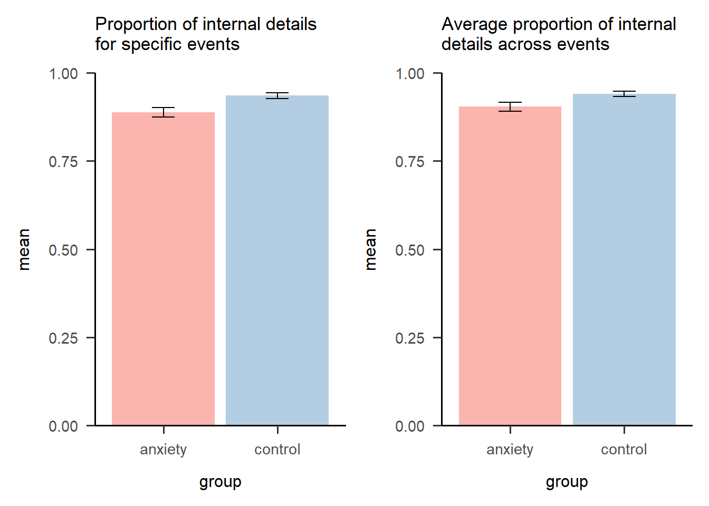

Last updated: 2020-10-25
Checks: 7 0
Knit directory: sakiko_project/
This reproducible R Markdown analysis was created with workflowr (version 1.6.2). The Checks tab describes the reproducibility checks that were applied when the results were created. The Past versions tab lists the development history.
Great! Since the R Markdown file has been committed to the Git repository, you know the exact version of the code that produced these results.
Great job! The global environment was empty. Objects defined in the global environment can affect the analysis in your R Markdown file in unknown ways. For reproduciblity it’s best to always run the code in an empty environment.
The command set.seed(20200910) was run prior to running the code in the R Markdown file. Setting a seed ensures that any results that rely on randomness, e.g. subsampling or permutations, are reproducible.
Great job! Recording the operating system, R version, and package versions is critical for reproducibility.
Nice! There were no cached chunks for this analysis, so you can be confident that you successfully produced the results during this run.
Great job! Using relative paths to the files within your workflowr project makes it easier to run your code on other machines.
Great! You are using Git for version control. Tracking code development and connecting the code version to the results is critical for reproducibility.
The results in this page were generated with repository version 20beb99. See the Past versions tab to see a history of the changes made to the R Markdown and HTML files.
Note that you need to be careful to ensure that all relevant files for the analysis have been committed to Git prior to generating the results (you can use wflow_publish or wflow_git_commit). workflowr only checks the R Markdown file, but you know if there are other scripts or data files that it depends on. Below is the status of the Git repository when the results were generated:
Ignored files:
Ignored: .Rhistory
Ignored: .Rproj.user/
Note that any generated files, e.g. HTML, png, CSS, etc., are not included in this status report because it is ok for generated content to have uncommitted changes.
These are the previous versions of the repository in which changes were made to the R Markdown (analysis/coding5.Rmd) and HTML (docs/coding5.html) files. If you’ve configured a remote Git repository (see ?wflow_git_remote), click on the hyperlinks in the table below to view the files as they were in that past version.
| File | Version | Author | Date | Message |
|---|---|---|---|---|
| Rmd | 20beb99 | Sakiko Okayama | 2020-10-25 | week 6 coding and blog complete |
| Rmd | bf138eb | Your Name | 2020-10-22 | jenny adding coding5 suggestions |
| html | 5061f5f | Sakiko Okayama | 2020-10-22 | Build site. |
| Rmd | c3c9614 | Sakiko Okayama | 2020-10-22 | coding 5 progress |
| Rmd | 2416f0f | Your Name | 2020-10-16 | adding coding5 |
library(tidyverse)
library(here)
library(ggeasy)
library(ggbeeswarm)
library(RColorBrewer)
library(papaja)
library(patchwork)study_3_details_mtt.csv in the data folder
details <- read_csv(here("data", "study3_details_mtt.csv"))table_details <- table(details$group)
print(table_details)
ANX CON
14 20 You will create them again below.
select_details <- details %>%
select(!contains(c("proportion", "code", "identifier")))
select_specificity <- details %>% select(!contains(c("proportion", "internal", "external", "identifier"))) We have two group and pp in each group described 2 events in each of the following categories
There are variables in the dataset for the code (specific categorical general), number of internal details, external details. The data is in wide format.
Make the data long so there are variables for - event (event1, event2) - valence (pos, neu, neg) - direction (past/future) - detail type (internal/external)
long_details <- select_details %>%
pivot_longer(
names_to = c("direction", "valence", "event", "detail_type"),
values_to = "number_details",
names_sep = "_",
future_neutral_e1_internal:future_neg_e2_external)
head(long_details)# A tibble: 6 x 7
px_no group direction valence event detail_type number_details
<chr> <chr> <chr> <chr> <chr> <chr> <dbl>
1 p_1001 ANX future neutral e1 internal 14
2 p_1001 ANX future neutral e1 external 3
3 p_1001 ANX future neutral e2 internal NA
4 p_1001 ANX future neutral e2 external NA
5 p_1001 ANX past neutral e1 internal 7
6 p_1001 ANX past neutral e1 external 5long_specificity <- select_specificity %>%
pivot_longer(
names_to = c("direction", "valence", "event"),
values_to = "specificity_code",
names_sep = "_",
future_neutral_e1_code:future_neg_e2_code) Warning: Expected 3 pieces. Additional pieces discarded in 12 rows [1, 2, 3, 4,
5, 6, 7, 8, 9, 10, 11, 12].head(long_specificity)# A tibble: 6 x 6
px_no group direction valence event specificity_code
<chr> <chr> <chr> <chr> <chr> <dbl>
1 p_1001 ANX future neutral e1 3
2 p_1001 ANX future neutral e2 2
3 p_1001 ANX past neutral e1 3
4 p_1001 ANX past neutral e2 2
5 p_1001 ANX past neg e1 3
6 p_1001 ANX past neg e2 3sakiko- here is a way of doing this without making things wide- it is harder to sum across when things are not in different columns, but you can use group_by(all variables except the one you want to sum across) and summarise to get a total score.
total_specificity <- long_specificity %>%
group_by(px_no, group, direction, valence) %>%
summarise(total_specificity_code = sum(specificity_code))`summarise()` regrouping output by 'px_no', 'group', 'direction' (override with `.groups` argument)head(total_specificity)# A tibble: 6 x 5
# Groups: px_no, group, direction [2]
px_no group direction valence total_specificity_code
<chr> <chr> <chr> <chr> <dbl>
1 p_1001 ANX future neg 5
2 p_1001 ANX future neutral 5
3 p_1001 ANX future pos 6
4 p_1001 ANX past neg 6
5 p_1001 ANX past neutral 5
6 p_1001 ANX past pos 6proportion_details <- long_details %>%
pivot_wider(names_from = event, values_from = number_details) %>%
pivot_wider(names_from = detail_type, values_from = e1:e2) %>%
mutate(proportion_e1 = e1_internal/(e1_internal + e1_external)) %>%
mutate(proportion_e2 = e2_internal/(e2_internal + e2_external)) %>%
mutate(proportion_details_average = (proportion_e1 + proportion_e2)/2) %>%
select(!(e1_internal:proportion_e2))
head(proportion_details)# A tibble: 6 x 5
px_no group direction valence proportion_details_average
<chr> <chr> <chr> <chr> <dbl>
1 p_1001 ANX future neutral NA
2 p_1001 ANX past neutral NA
3 p_1001 ANX past neg 0.985
4 p_1001 ANX past pos 1
5 p_1001 ANX future pos 1
6 p_1001 ANX future neg NA # another way to do the above, without making the data wide again...
proportion_details <- long_details %>%
group_by(px_no, group, direction, valence, event) %>%
mutate(total = sum(number_details)) %>%
filter(detail_type == "internal") %>%
summarise(proportion = number_details/total) %>%
group_by(px_no, group, direction, valence) %>%
summarise(proportion_details_average = mean(proportion))`summarise()` regrouping output by 'px_no', 'group', 'direction', 'valence' (override with `.groups` argument)`summarise()` regrouping output by 'px_no', 'group', 'direction' (override with `.groups` argument)head(proportion_details)# A tibble: 6 x 5
# Groups: px_no, group, direction [2]
px_no group direction valence proportion_details_average
<chr> <chr> <chr> <chr> <dbl>
1 p_1001 ANX future neg NA
2 p_1001 ANX future neutral NA
3 p_1001 ANX future pos 1
4 p_1001 ANX past neg 0.985
5 p_1001 ANX past neutral NA
6 p_1001 ANX past pos 1 specificity_details <- merge(total_specificity, proportion_details, by=c("px_no", "group", "direction", "valence"))
head(specificity_details) px_no group direction valence total_specificity_code
1 p_1001 ANX future neg 5
2 p_1001 ANX future neutral 5
3 p_1001 ANX future pos 6
4 p_1001 ANX past neg 6
5 p_1001 ANX past neutral 5
6 p_1001 ANX past pos 6
proportion_details_average
1 NA
2 NA
3 1.0000000
4 0.9848485
5 NA
6 1.0000000Questions to start with….
total_specificity %>%
group_by(group) %>%
summarise(mean = mean(total_specificity_code, na.rm = TRUE),
sd = sd(total_specificity_code, na.rm = TRUE),
n = n(),
stderror = sd/sqrt(n)) %>%
ggplot(aes(x = group, y = mean, fill = group)) +
geom_col() +
geom_errorbar(aes(x = group, ymin = mean-stderror, ymax = mean+stderror, width=.2)) +
theme_apa() +
scale_y_continuous(expand = c(0,0), limits = c(0, 6))+
scale_x_discrete(labels=c("ANX" = "anxiety", "CON" = "control")) +
scale_fill_brewer(palette="Pastel1") +
labs(title = "Mean specificity score by group") +
easy_remove_legend() `summarise()` ungrouping output (override with `.groups` argument)#make a data frame with specificity code and proportion details, separate for e1 and e2
proportion_details_by_event <- long_details %>%
group_by(px_no, group, direction, valence, event) %>%
mutate(total = sum(number_details)) %>%
filter(detail_type == "internal") %>%
summarise(proportion_details = number_details/total)`summarise()` regrouping output by 'px_no', 'group', 'direction', 'valence' (override with `.groups` argument)specificity_details_by_event <- merge(proportion_details_by_event, long_specificity, by=c("px_no", "group", "direction", "valence", "event"))
#plot
p1 <- specificity_details_by_event %>%
filter(specificity_code == "3") %>%
group_by(group) %>%
summarise(mean = mean(proportion_details, na.rm = TRUE),
sd = sd(proportion_details, na.rm = TRUE),
n = n(),
stderror = sd/sqrt(n)) %>%
ggplot(aes(x = group, y = mean, fill = group)) +
geom_col() +
geom_errorbar(aes(x = group, ymin = mean-stderror, ymax = mean+stderror, width=.2)) +
theme_apa() +
scale_y_continuous(expand = c(0,0), limits = c(0, 1))+
scale_x_discrete(labels=c("ANX" = "anxiety", "CON" = "control")) +
scale_fill_brewer(palette="Pastel1") +
labs(title = "Proportion of internal details \nfor specific events") +
easy_remove_legend()`summarise()` ungrouping output (override with `.groups` argument)p1p2 <- proportion_details %>%
group_by(group) %>%
summarise(mean = mean(proportion_details_average, na.rm = TRUE),
sd = sd(proportion_details_average, na.rm = TRUE),
n = n(),
stderror = sd/sqrt(n)) %>%
ggplot(aes(x = group, y = mean, fill = group)) +
geom_col() +
geom_errorbar(aes(x = group, ymin = mean-stderror, ymax = mean+stderror, width=.2)) +
theme_apa() +
scale_y_continuous(expand = c(0,0), limits = c(0, 1))+
scale_x_discrete(labels=c("ANX" = "anxiety", "CON" = "control")) +
scale_fill_brewer(palette="Pastel1") +
labs(title = "Average proportion of internal \ndetails across events") +
easy_remove_legend()`summarise()` ungrouping output (override with `.groups` argument)p1 + p2 The difference is only very slightly more pronounced when you use the proportion score for individual events rather than averaged across e1 & e2 (which results in more missing values).
# average the raw internal/external scores across events
number_details_average <- long_details %>%
group_by(px_no, group, direction, valence, detail_type) %>%
mutate(number_details_average = mean(number_details))
#plot
p3 <- number_details_average %>%
group_by(group, detail_type) %>%
summarise(mean = mean(number_details_average, na.rm = TRUE),
sd = sd(number_details_average, na.rm = TRUE),
n = n(),
stderror = sd/sqrt(n)) %>%
ggplot(aes(x = group, y = mean, fill = group)) +
geom_col(position = "dodge") +
facet_wrap(~ detail_type) +
geom_errorbar(aes(x = group, ymin = mean-stderror, ymax = mean+stderror, width=.2)) +
theme_apa() +
scale_y_continuous(expand = c(0,0)) +
scale_x_discrete(labels=c("ANX" = "anxiety", "CON" = "control")) +
scale_fill_brewer(palette="Pastel1") +
labs(title = "Average number of internal and \nexternal details across events") +
easy_remove_legend()`summarise()` regrouping output by 'group' (override with `.groups` argument)p2 + p3The pattern of results does look different when we use raw scores instead of proportions. The anxiety group gave more external and internal details, suggesting that their total response output was higher. However, the proportion of internal details was lower in the anxiety group than in controls.
total_specificity %>%
group_by(group, valence) %>%
summarise(mean = mean(total_specificity_code, na.rm = TRUE),
sd = sd(total_specificity_code, na.rm = TRUE),
n = n(),
stderror = sd/sqrt(n)) %>%
ggplot(aes(x = group, y = mean, fill = group)) +
geom_col(position = "dodge") +
facet_wrap(~ valence) +
geom_errorbar(aes(x = group, ymin = mean-stderror, ymax = mean+stderror, width=.2)) +
theme_apa() +
scale_y_continuous(expand = c(0,0), limits = c(0, 6))+
scale_x_discrete(labels=c("ANX" = "anxiety", "CON" = "control")) +
scale_fill_brewer(palette="Pastel1") +
labs(title = "Mean specificity score by group and valence") +
easy_remove_legend() `summarise()` regrouping output by 'group' (override with `.groups` argument)Anxiety group gave less specific responses for neutral events. Specificity scores look more or less equal between groups for negative and positive events.
proportion_details %>%
group_by(group, valence) %>%
summarise(mean = mean(proportion_details_average, na.rm = TRUE),
sd = sd(proportion_details_average, na.rm = TRUE),
n = n(),
stderror = sd/sqrt(n)) %>%
ggplot(aes(x = group, y = mean, fill = group)) +
geom_col(position = "dodge") +
facet_wrap(~ valence) +
geom_errorbar(aes(x = group, ymin = mean-stderror, ymax = mean+stderror, width=.2)) +
theme_apa() +
scale_y_continuous(expand = c(0,0), limits = c(0, 1))+
scale_x_discrete(labels=c("ANX" = "anxiety", "CON" = "control")) +
scale_fill_brewer(palette="Pastel1") +
labs(title = "Average proportion of internal details by group and valence") +
easy_remove_legend()`summarise()` regrouping output by 'group' (override with `.groups` argument)Anxiety group gave a lower proportion of internal details for negative and neutral events, but not positive events.
p4 <- total_specificity %>%
group_by(direction) %>%
summarise(mean = mean(total_specificity_code, na.rm = TRUE),
sd = sd(total_specificity_code, na.rm = TRUE),
n = n(),
stderror = sd/sqrt(n)) %>%
ggplot(aes(x = direction, y = mean, fill = direction)) +
geom_col() +
geom_errorbar(aes(x = direction, ymin = mean-stderror, ymax = mean+stderror, width=.2)) +
theme_apa() +
scale_y_continuous(expand = c(0,0), limits = c(0, 6))+
scale_x_discrete(labels=c("ANX" = "anxiety", "CON" = "control")) +
scale_fill_brewer(palette="Pastel1") +
labs(title = "Mean specificity score by \ndirection") +
easy_remove_legend() `summarise()` ungrouping output (override with `.groups` argument)p5 <- proportion_details %>%
group_by(direction) %>%
summarise(mean = mean(proportion_details_average, na.rm = TRUE),
sd = sd(proportion_details_average, na.rm = TRUE),
n = n(),
stderror = sd/sqrt(n)) %>%
ggplot(aes(x = direction, y = mean, fill = direction)) +
geom_col() +
geom_errorbar(aes(x = direction, ymin = mean-stderror, ymax = mean+stderror, width=.2)) +
theme_apa() +
scale_y_continuous(expand = c(0,0), limits = c(0, 1))+
scale_x_discrete(labels=c("ANX" = "anxiety", "CON" = "control")) +
scale_fill_brewer(palette="Pastel1") +
labs(title = "Average proportion of internal \ndetails by direction") +
easy_remove_legend()`summarise()` ungrouping output (override with `.groups` argument)p4 + p5 p6 <- total_specificity %>%
group_by(group, direction) %>%
summarise(mean = mean(total_specificity_code, na.rm = TRUE),
sd = sd(total_specificity_code, na.rm = TRUE),
n = n(),
stderror = sd/sqrt(n)) %>%
ggplot(aes(x = direction, y = mean, fill = direction)) +
geom_col(position = "dodge") +
facet_wrap(~ group) +
geom_errorbar(aes(x = direction, ymin = mean-stderror, ymax = mean+stderror, width=.2)) +
theme_apa() +
scale_y_continuous(expand = c(0,0), limits = c(0, 6))+
scale_x_discrete(labels=c("ANX" = "anxiety", "CON" = "control")) +
scale_fill_brewer(palette="Pastel1") +
labs(title = "Mean specificity score by \ndirection and group") +
easy_remove_legend() `summarise()` regrouping output by 'group' (override with `.groups` argument)p7 <- proportion_details %>%
group_by(group, direction) %>%
summarise(mean = mean(proportion_details_average, na.rm = TRUE),
sd = sd(proportion_details_average, na.rm = TRUE),
n = n(),
stderror = sd/sqrt(n)) %>%
ggplot(aes(x = direction, y = mean, fill = direction)) +
geom_col(position = "dodge") +
facet_wrap(~ group) +
geom_errorbar(aes(x = direction, ymin = mean-stderror, ymax = mean+stderror, width=.2)) +
theme_apa() +
scale_y_continuous(expand = c(0,0), limits = c(0, 1))+
scale_x_discrete(labels=c("ANX" = "anxiety", "CON" = "control")) +
scale_fill_brewer(palette="Pastel1") +
labs(title = "Average proportion of internal \ndetails by direction and group") +
easy_remove_legend()`summarise()` regrouping output by 'group' (override with `.groups` argument)p6 + p7p8 <- total_specificity %>%
filter(group == "ANX") %>%
group_by(valence, direction) %>%
summarise(mean = mean(total_specificity_code, na.rm = TRUE),
sd = sd(total_specificity_code, na.rm = TRUE),
n = n(),
stderror = sd/sqrt(n)) %>%
ggplot(aes(x = valence, y = mean, fill = valence)) +
geom_col(position = "dodge") +
facet_wrap(~ direction) +
geom_errorbar(aes(x = valence, ymin = mean-stderror, ymax = mean+stderror, width=.2)) +
theme_apa() +
scale_y_continuous(expand = c(0,0), limits = c(0, 6))+
scale_fill_brewer(palette="Pastel1") +
labs(title = "Mean specificity scores in anxiety \ngroup by direction and valence") +
easy_remove_legend() `summarise()` regrouping output by 'valence' (override with `.groups` argument)p9 <- total_specificity %>%
filter(group == "CON") %>%
group_by(valence, direction) %>%
summarise(mean = mean(total_specificity_code, na.rm = TRUE),
sd = sd(total_specificity_code, na.rm = TRUE),
n = n(),
stderror = sd/sqrt(n)) %>%
ggplot(aes(x = valence, y = mean, fill = valence)) +
geom_col(position = "dodge") +
facet_wrap(~ direction) +
geom_errorbar(aes(x = valence, ymin = mean-stderror, ymax = mean+stderror, width=.2)) +
theme_apa() +
scale_y_continuous(expand = c(0,0), limits = c(0, 6))+
scale_fill_brewer(palette="Pastel1") +
labs(title = "Mean specificity scores in control \ngroup by direction and valence") +
easy_remove_legend() `summarise()` regrouping output by 'valence' (override with `.groups` argument)p8 + p9p10 <- proportion_details %>%
filter(group == "ANX") %>%
group_by(valence, direction) %>%
summarise(mean = mean(proportion_details_average, na.rm = TRUE),
sd = sd(proportion_details_average, na.rm = TRUE),
n = n(),
stderror = sd/sqrt(n)) %>%
ggplot(aes(x = valence, y = mean, fill = valence)) +
geom_col(position = "dodge") +
facet_wrap(~ direction) +
geom_errorbar(aes(x = valence, ymin = mean-stderror, ymax = mean+stderror, width=.2)) +
theme_apa() +
scale_y_continuous(expand = c(0,0), limits = c(0, 1))+
scale_fill_brewer(palette="Pastel1") +
labs(title = "Mean proportion of internal details \nin anxiety group by direction and \nvalence") +
easy_remove_legend() `summarise()` regrouping output by 'valence' (override with `.groups` argument)p11 <- proportion_details %>%
filter(group == "CON") %>%
group_by(valence, direction) %>%
summarise(mean = mean(proportion_details_average, na.rm = TRUE),
sd = sd(proportion_details_average, na.rm = TRUE),
n = n(),
stderror = sd/sqrt(n)) %>%
ggplot(aes(x = valence, y = mean, fill = valence)) +
geom_col(position = "dodge") +
facet_wrap(~ direction) +
geom_errorbar(aes(x = valence, ymin = mean-stderror, ymax = mean+stderror, width=.2)) +
theme_apa() +
scale_y_continuous(expand = c(0,0), limits = c(0, 1))+
scale_fill_brewer(palette="Pastel1") +
labs(title = "Mean proportion of internal details \nin control group by direction and \nvalence") +
easy_remove_legend() `summarise()` regrouping output by 'valence' (override with `.groups` argument)p10 + p11
sessionInfo()R version 4.0.2 (2020-06-22)
Platform: x86_64-w64-mingw32/x64 (64-bit)
Running under: Windows 10 x64 (build 19041)
Matrix products: default
locale:
[1] LC_COLLATE=English_Australia.1252 LC_CTYPE=English_Australia.1252
[3] LC_MONETARY=English_Australia.1252 LC_NUMERIC=C
[5] LC_TIME=English_Australia.1252
attached base packages:
[1] stats graphics grDevices utils datasets methods base
other attached packages:
[1] patchwork_1.0.1 papaja_0.1.0.9997 RColorBrewer_1.1-2 ggbeeswarm_0.6.0
[5] ggeasy_0.1.2 here_0.1 forcats_0.5.0 stringr_1.4.0
[9] dplyr_1.0.2 purrr_0.3.4 readr_1.3.1 tidyr_1.1.1
[13] tibble_3.0.3 ggplot2_3.3.2 tidyverse_1.3.0 workflowr_1.6.2
loaded via a namespace (and not attached):
[1] Rcpp_1.0.5 lubridate_1.7.9 utf8_1.1.4 assertthat_0.2.1
[5] rprojroot_1.3-2 digest_0.6.25 R6_2.4.1 cellranger_1.1.0
[9] backports_1.1.7 reprex_0.3.0 evaluate_0.14 httr_1.4.2
[13] pillar_1.4.6 rlang_0.4.7 readxl_1.3.1 rstudioapi_0.11
[17] whisker_0.4 blob_1.2.1 rmarkdown_2.3 labeling_0.3
[21] munsell_0.5.0 broom_0.7.0.9001 compiler_4.0.2 httpuv_1.5.4
[25] vipor_0.4.5 modelr_0.1.8 xfun_0.16 pkgconfig_2.0.3
[29] htmltools_0.5.0 tidyselect_1.1.0 fansi_0.4.1 crayon_1.3.4
[33] dbplyr_1.4.4 withr_2.2.0 later_1.1.0.1 grid_4.0.2
[37] jsonlite_1.7.0 gtable_0.3.0 lifecycle_0.2.0 DBI_1.1.0
[41] git2r_0.27.1 magrittr_1.5 scales_1.1.1 cli_2.0.2
[45] stringi_1.4.6 farver_2.0.3 fs_1.5.0 promises_1.1.1
[49] xml2_1.3.2 ellipsis_0.3.1 generics_0.0.2 vctrs_0.3.2
[53] tools_4.0.2 glue_1.4.1 beeswarm_0.2.3 hms_0.5.3
[57] yaml_2.2.1 colorspace_1.4-1 rvest_0.3.6 knitr_1.29
[61] haven_2.3.1